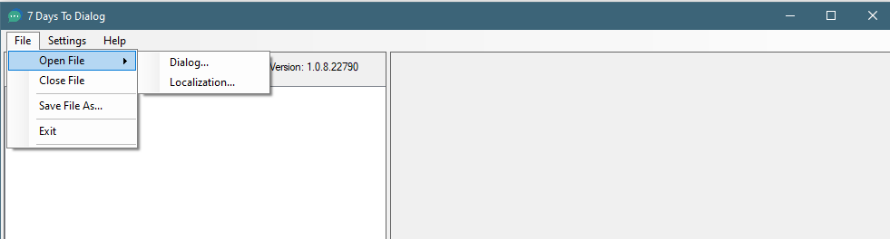

Interface
The interface of the tool is meant to simplify the process of generating the dialog change.
The File Menu is where you can:
Open File Dialog:
This option lets you open up an existing dialogs.xml
Open File Localization:
This option lets you open an existing Localization.txt. This is useful if you are working with the vanilla dialog.xml, and want to show references from the Localization
Close File:
This option closes the file.
Save File As:
This option will save all the NPCs currently defined to a new dialogs.xml
Exit:
This option closes the application.

The Settings menu is where you can:
Enable Extensions: This option enables the additional feature support provided by the DMT mod 0-SphereIICore, which adds more requirement types, and actions.
The Main UI:
To generate a new NPC dialog, enter in the NPC name, and click on the Add New NPC button.
After click on Add New NPC button, the NPC will be added to the box below, and adds in an initial starting statement.
On the right hand screen, the current Conversation is displayed.
A drop down box will show you the currently selected NPC.
Save Conversation will save the Statement and Responses.
Cancel Conversation will clear the current Statement and Responses.
The NPC Says... box is an editable field where you can change the NPC's statement. Once you change it, click on Save Conversation for it to be updated.
The You Can Say... is where the Responses will show up.
Click on Add New Response to add a new response.
When the Add New Response is clicked, an Add New Response is displayed. It allows you to type in what you want to say to the NPC.
The Link to Existing Statement and Create New Statement allows you to set, or create a new, NPC statement that displays when the player clicks on the response. This is where the conversation can progress to the next statement level.
As you add more Statements to the NPC, the Existing Statement will grow.
Alternatively, you may click on Create New Statement and enter in a new Statement.
By default, Auto Generate Response ID is checked. This will generate a new Response_ID that is unique automatically. This is to help avoid duplicate Response ID's.
Click on the Add button will add the Response to the You Can Say box, either linking it to the existing statement or generating a new Statement.
To add a Requirement or Action to a Response, you may right click on the Response to open up the context menu.
Add New Response: Clears and displays the Add New Response window.
Delete Response: Deletes the current Response
Edit Response: Allow you to change the wording of the response, or the Statement of that Response.
Add Requirement: Opens up the Add Requirement Window
Add Action: Opens up the Add Action Window
Add Quest Entry: Adds the default Trader's Quest options.
Add Requirement Window
The Add Requirement Window allows placing requirements or conditions in which the response will show up.
The following Requirements are available in Vanilla (as of Alpha 18.3 )
If the Enabled Extensions, under the Settings Menu Menu checked, more options are available.
Depending on which Requirement is selected, different options are available that are relevant for that requirement.

In the above example, using the Enabled Extensions, the HasBuffSDX, Mods has a Buffs: text box. The text box expects a buff to be entered.
If the player has the buff buffGodMode, then the Requirement will be True, and the Response option will display.
Add Action
An Action is something that can occur when the Response is selected. As opposed to a Requirement, which determines if the Response shows up at all, an Action can trigger an event.
Depending on the Action selected, various options will be made available.
The following will set a cvar called myNewCVar, with a value of 1, on the player, when the Response is clicked.
Created with the Personal Edition of HelpNDoc: Free Qt Help documentation generator